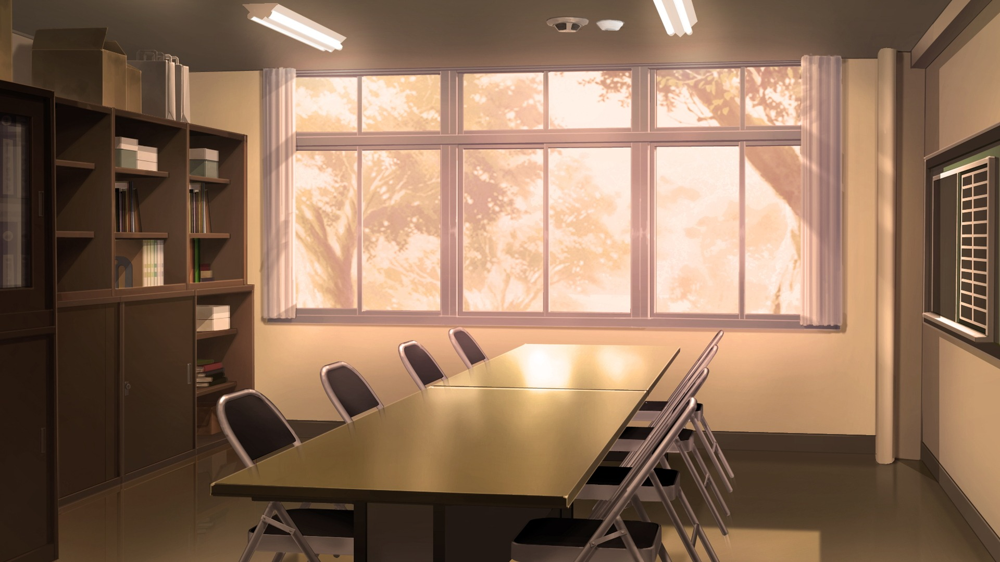
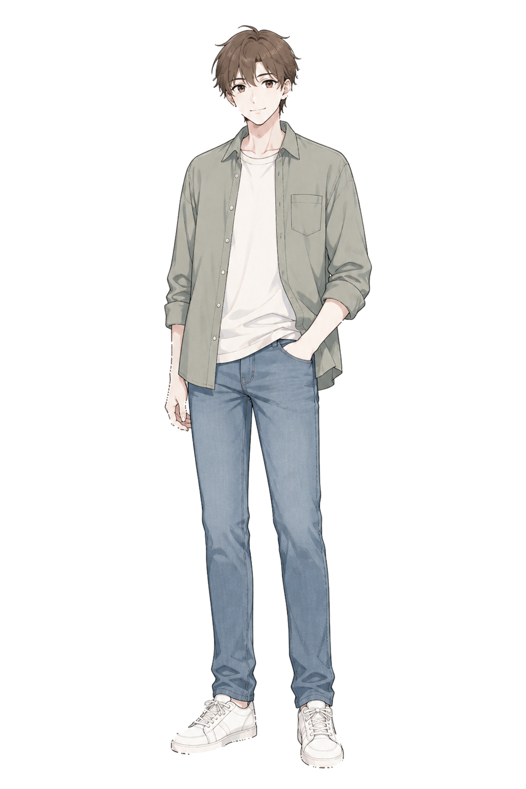

委托之前，
可能想先知道这些。



没有完整剧本，可以咨询吗？
可以。你可以只提供 OC 设定、关系和希望发生的故事方向。具体能协助到什么程度，会根据需求量再确认。
没有完整立绘怎么办？
可以先提交现有资料。是否需要补充立绘、表情或其他素材，会在确认方案时列出来。
现在可以直接在线玩吗？
当前 PROJECT 001 仍在制作中，网页试玩也在后续计划里。网站会先作为项目展示和定制需求入口。
价格为什么还没有固定？
游戏制作量会受到时长、角色数量、剧情分支、CG、UI 与素材完整度影响。当前阶段先通过实际需求整理出更合理的套餐。
客户的 OC 游戏一定会公开展示吗？
不会默认公开。公开展示、案例使用与私人项目的规则会在正式委托条款中单独确认。